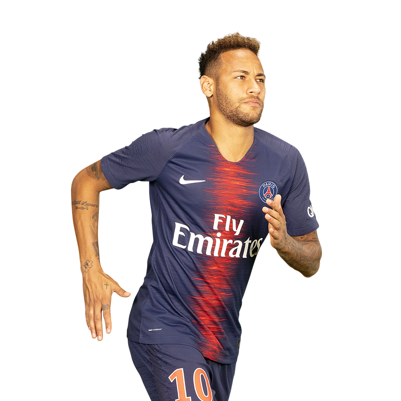
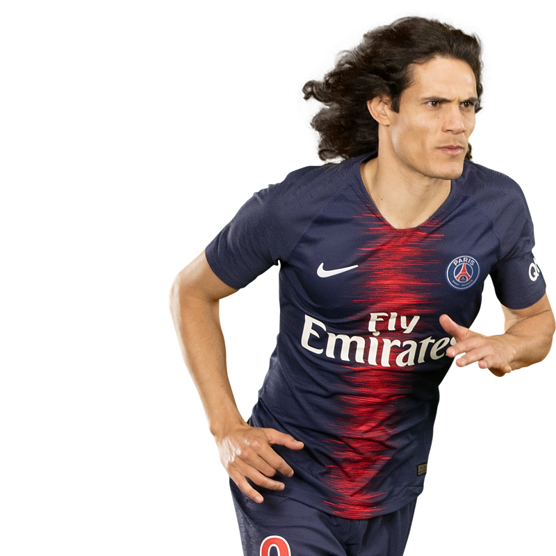
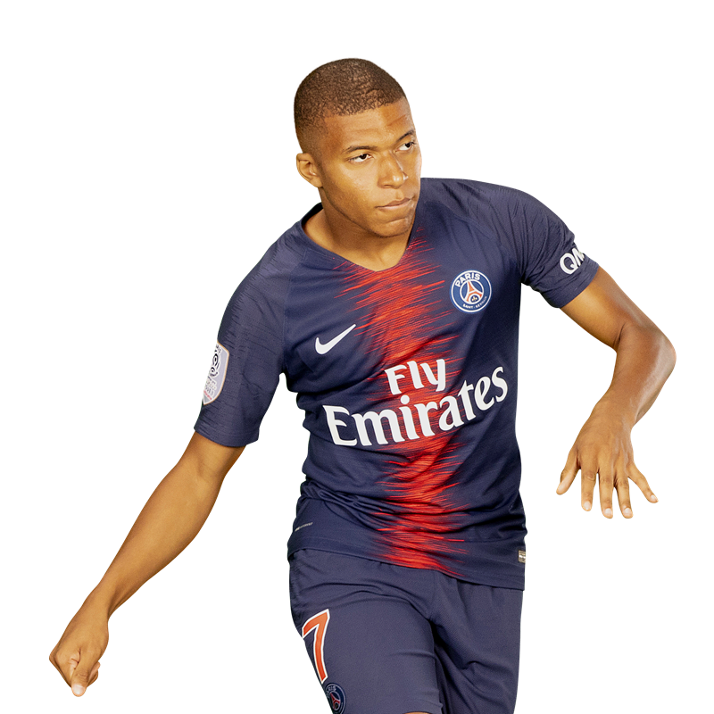

The Parc des Princes is an all-seater football stadium in Paris, France.[37] The venue is located in the south-west of the French capital,[38] inside the 16th arrondissement of Paris, in the immediate vicinity of the Stade Jean-Bouin (rugby venue) and within walking distance from the Stade Roland Garros
| name | ||
|---|---|---|
| Neymar JR |  | |
| Edinson Cavani |  | |
| Kylian Mbappe |  |